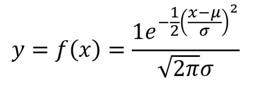

¿Qué es la Distribución Normal?
La distribución normal, también conocida como la distribución de Gauss o campana de Gauss, es una distribución de probabilidad continua que se utiliza comúnmente en estadísticas. Se caracteriza por tener una forma de campana simétrica alrededor de su media. En esta sección, exploraremos los conceptos básicos de la distribución normal y su importancia en la teoría de probabilidad y estadísticas.
Calculadora de distribución normal
En esta sección, puedes ingresar los parámetros de la distribución normal, como la media y la desviación estándar. Además, podrás seleccionar la probabilidad que deseas calcular, ya sea la probabilidad de que una variable aleatoria sea menor que cierto valor o mayor que cierto valor.
Conceptos Claves
En esta sección, se abordarán los conceptos clave relacionados con la distribución normal, así como una guía sobre cómo utilizar la calculadora asociada. A continuación, se detallan los elementos esenciales:
-
Media (μ): Representa el valor medio de la distribución. Ingresa este valor para centrar la campana de Gauss en el punto deseado.
-
Desviación Estándar (σ): Indica la medida de dispersión de los datos con respecto a la media. Ingrese la desviación estándar para comprender la amplitud de la distribución.
-
Probabilidad: Selecciona si deseas calcular la probabilidad de que la variable aleatoria sea menor o mayor que cierto valor. Esta elección define el contexto del cálculo.
-
Valor de Probabilidad: Ingresa el valor para el cual deseas calcular la probabilidad. Este valor será el punto de referencia para la evaluación probabilística.
Fórmula de la Distribución Normal
La función de densidad de probabilidad (PDF) de la distribución normal se define por la siguiente fórmula:

-
f(x;μ,σ): Representa la probabilidad de que la variable aleatoria tome el valor σ.
-
μ: Es la media de la distribución, que indica el centro de la campana.
-
σ: Es la desviación estándar, que determina la dispersión de los datos alrededor de la media.
-
e: Es la base del logaritmo natural (aproximadamente 2.71828).
Esta fórmula describe la forma de la curva de campana y se utiliza para calcular la probabilidad de que la variable aleatoria caiga en un rango específico. En la práctica, muchos cálculos relacionados con la distribución normal se realizan utilizando tablas de valores z o software estadístico, pero esta fórmula subyace en el fundamento teórico de la distribución normal.